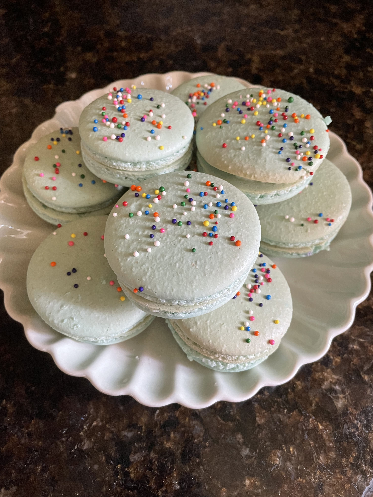
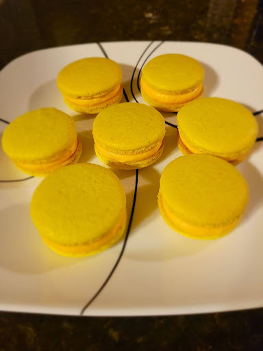
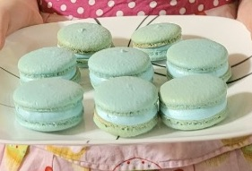
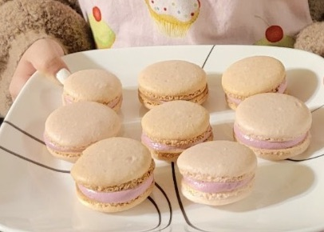

Baking Macarons
A personal baking log documenting my experiences
A little bit about me:
I started getting interested in baking during the Covid-19 pandemic when I was stuck at home. I saw macarons in bakeries and in videos I watched online. With all the spare time I had, I decided to start a new hobby. I heard macarons were difficult to bake, and the challenge made me want to try making them myself. I think baking is a good skill to learn and anyone can have fun doing it, no matter their skill level. Baking is now one of my favorite hobbies! I find myself in the kitchen whenever I need to relax or just want a sweet treat. I can express my creativity through desserts and share my creations for all to enjoy.
What are macarons?
Macarons are French cookie sandwiches made with primarily egg whites, almond flour, and sugar. They can have a variety of fillings, but I mostly use buttercream. Macarons usually have vibrant colors and are very delicate. They're different from the traditional cookie because macarons use almond flour instead of all-purpose or whole wheat flour.


How to make them:
Ingredients/Materials:
For the macarons
- 1 cup (130g) powdered sugar
- 1 1/2 cups (140g) almond flour
- sieve
- 3 room temp. egg whites
- 1/4 teaspoon cream of tartar
- 1/4 teaspoon salt
- 1/2 cup sugar
- 1 teaspoon vanilla
- food coloring (optional)
- electric mixer (easier than hand mixing)
For the buttercream
- 1 cup room temp. butter
- 3 cups powdered sugar
- 1 teaspoon vanilla extract
- 1-2 tablespoons heavy cream
- piping bag (can use ziploc bag too)
Instructions:
- Preheat oven to 320°F
- Sift together the almond flour and powdered sugar into a bowl until there's no clumps then set aside
- Beat egg whites until foamy and add cream of tartar, salt, and gradually add sugar
- When soft peaks form, add vanilla extract and food coloring and keep mixing
- At this point, the meringue should have stiff peaks and stay in the bowl when it's upside down
- Fold the dry ingredients into the meringue (Make sure not to over mix)
- Pipe mixture onto a baking sheet and release air bubbles by tapping the tray
- Let the tray rest for about 30 min-1 hour to let the skin on top form
- Bake for 15 min
- While the macarons are baking, make the buttercream by mixing butter, powdered sugar, vanilla extract, and heavy cream
- Mix the buttercream until you get your desired consistency
- After macarons are out of the oven, let them completely cool
- Pipe buttercream on one shell then place another shell on top like a sandwich
- Enjoy!
more pictures! ˙ᵕ˙
(baked all of these myself)


References: Sally's Baking Addiction
Want to see more? Click this link!